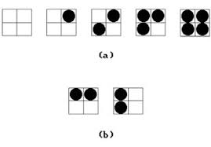
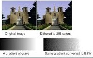

Halftoning Technique

- Newspaper, photographs simulate a grey-scale image that can printed using only black ink.
- A newspaper picture is, in fact, made up of a pattern of tiny black dots of varying size.
- The human visual system has a tendency to average brightness over small areas, so the black dots and their white background merge and are perceived as an intermediate shade of grey.
- The process of generating a binary pattern of black and white dots from an image is termed half toning.
- In traditional newspaper and magazine production, this process is carried out photographically by projection of a transparency through a 'halftone screen' onto film.
- The screen is a glass plate with a grid etched into it.
- Different screens can be used to control the size and shape of the dots in the half toned image.
- In computer graphics, half toning reproductions are approximated using rectangular pixel region say 2 x 2 pixels or 3 x 3 pixels.
- These regions are called as “Halftone Patters” or “Pixel Patterns”.
- 2 x 2 pixel patterns for creating five intensity levels are shown in figure
Dithering Technique

- Another technique for digital half toning is dithering.
- It is the technique for approximating halftones without reducing resolution, as pixel grid patterns do.
- Dithering can be accomplished by Thresholding the image against a dither matrix.
- To obtain n2 intensity levels, it is necessary to setup an n x n dither matrix Dn whose elements are distinct positive integers in the range of 0 to n2 – 1.
- Matrix for 4 intensity level and 9 intensity level is shown below.

- The elements of a dither matrix are thresholds.
- The matrix is laid like a tile over the entire image and each pixel value is compared with the corresponding threshold from the matrix.
- The pixel becomes white if its value exceeds the threshold or black otherwise.
- This approach produces an output image with the same dimensions as the input image, but with less detail visible.
- High order dither matrices can be obtained from lower order matrices with the recurrence relation.